Introduction
NAI Smart Studio is a desktop app for working with NovelAI image generation. It combines Text-to-Image, Image-to-Image, and Inpaint with prompt editing, reference images, prompt search, and image history.
Screen layout
- Left panel: Set Prompt / Negative, characters, generation parameters, continuous generation, and reference images.
- Center panel: View and edit images in Canvas. Other tabs provide tag assistance, prompt search, metadata inspection, and more.
- Right panel: View saved images in History. Click an image to display it in Canvas, or Shift+click to import its generation settings and other data.
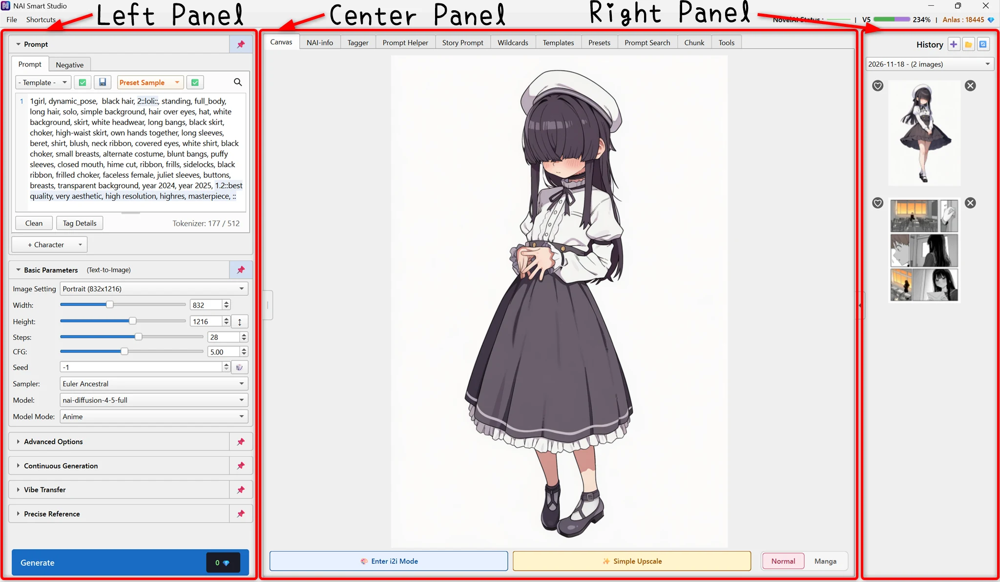
Initial Setup
Register your NovelAI API key to get started. Open settings through the first-launch guide or File → Settings.
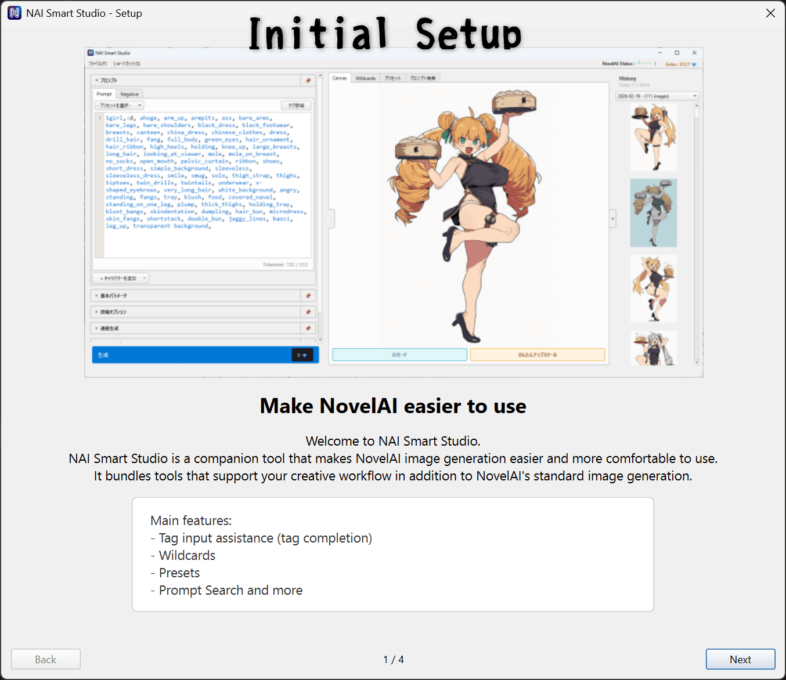
Get your API key
- Log in to the NovelAI website.
- Open account settings from the top-right account menu.
- Get and copy your permanent API token.
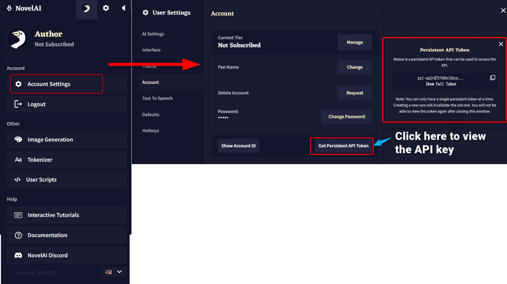
Register the key and choose settings
In the app’s API Key Management area, paste the key into the Key field and click Add. Check the connection test result, then click Save in the settings dialog. If you register multiple keys, select one and click Activate to switch accounts.
- Output folder: Choose where generated images are saved.
- Wildcard folder: Choose where the app reads wildcard files.
- UI language: Select Japanese, English, or another supported language.
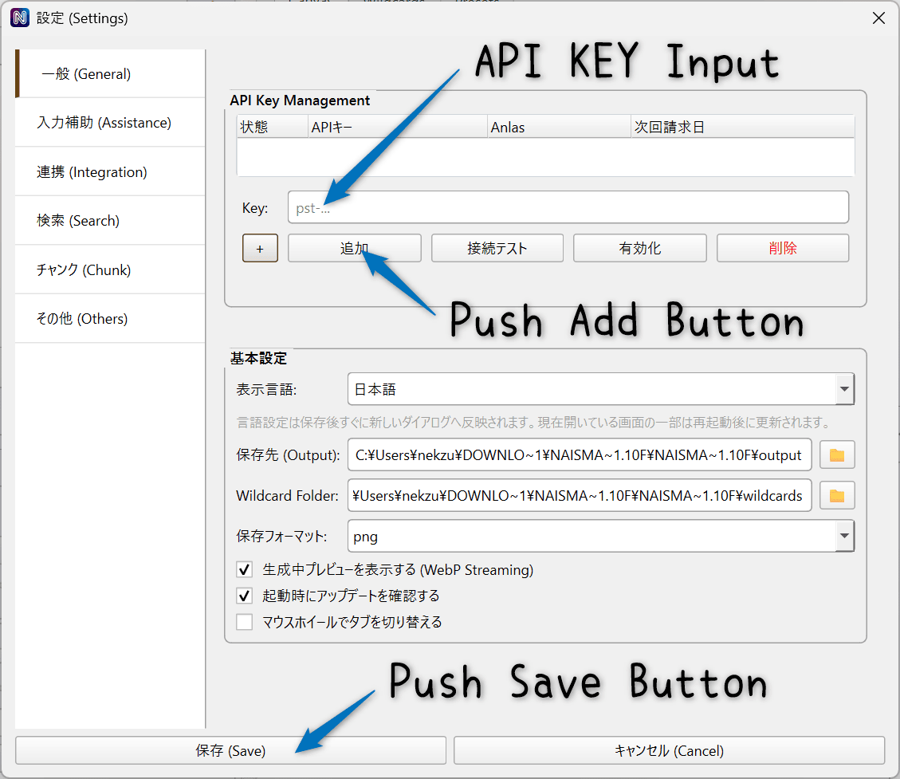
Basic Generation
Enter what you want to draw and choose generation settings in the left panel, then click Generate. Results appear in Canvas and, once saved, can be viewed and reused from History.
- Enter what to draw in Prompt and what to avoid in Negative.
- Select a model and image size, then adjust other parameters as needed.
- Check the estimated Anlas cost on the generation button and click Generate.
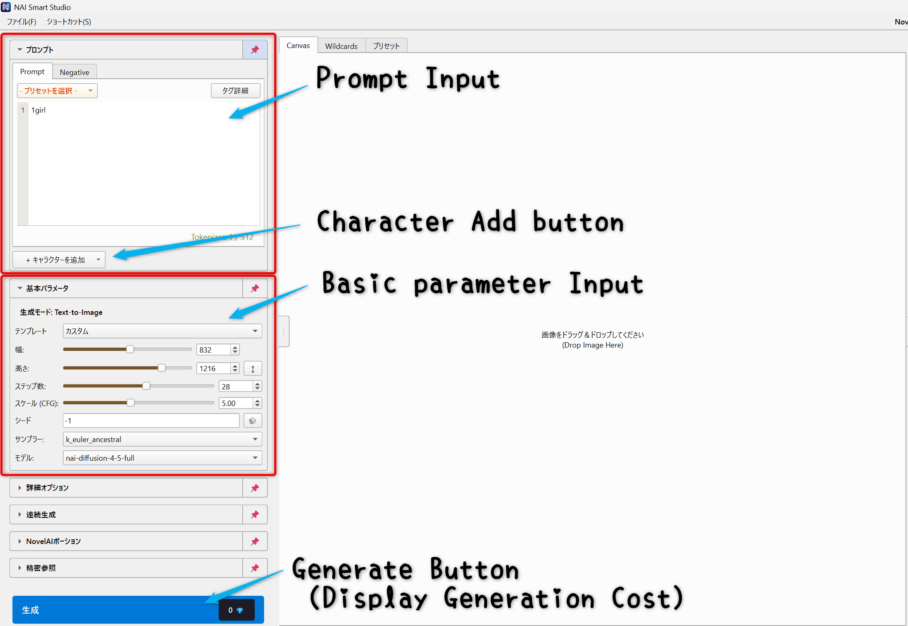
Prompt editing
- Prompt / Negative: Enter tags or text. Use Tag Details to inspect tags and the token counter to check prompt length. Drag the bottom edge of the input field to change its maximum height.
- Characters: Use Add Character to set individual Prompt / Negative fields and positions. Disable a character to leave it out of generation; collapsing its fields does not disable it.
- Find / Replace: Ctrl + F opens search and Ctrl + H opens replace across the main Prompt / Negative and all character fields.
- Comments: Temporarily exclude text from generation. Ctrl + / toggles the selection or the item at the cursor; Ctrl + Shift + / or a line-number click toggles whole lines.
Basic parameters
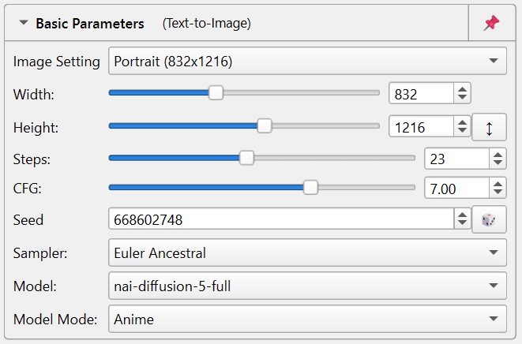
- Image Setting / Width / Height: Choose a square, portrait, or landscape preset, or set dimensions in 64px steps. Standard generation allows up to 3,145,728 pixels in total (width × height), so sizes such as 2560×768, 1728×1728, and 3072×1024 are also available.
- Model: Select V3 / V4 / V4.5 / V5 (Full / Curated / Economy). V4 and later also offer Anime / Furry mode.
- Steps / CFG / Sampler: Adjust the step count, prompt guidance, and sampling method.
- Seed:
-1is random. A fixed value makes it easier to reuse the same conditions.
Advanced options include quality tags and CFG Rescale. V5 also offers light quality tags and transparent backgrounds. The V5 Full Economy model uses fixed Steps, Sampler, and related settings, and does not use Negative. On the Opus plan, the remaining V5 generation allowance is shown at the top right. The estimated Anlas cost updates when you change the model, size, Steps, or other relevant settings.
Use Ctrl + Enter for normal generation or Ctrl + Alt + Enter to generate once. To repeat generation, see Continuous Generation.
Importing Images
Import saved images for editing or reuse their generation settings. Drag and drop an image, press Ctrl + O, Shift+click in History, or choose Import from an image’s right-click menu.
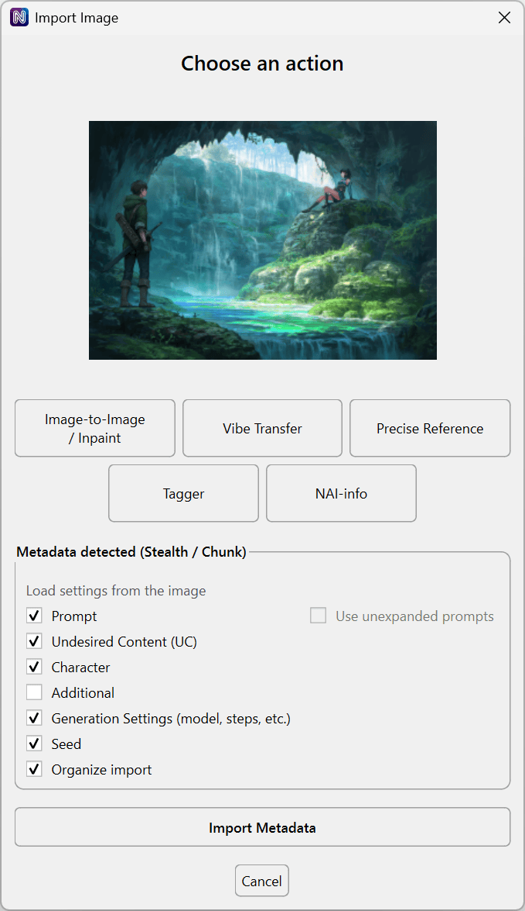
Choose a destination
- Image Only I2I / Inpaint: Load the image into Canvas as a source image.
- Vibe Transfer / Precise Reference: Add images to reference slots. You can import multiple images at once.
- Tagger: Infer tags from the image.
- NAI-info: Inspect the image’s embedded generation information.
- Metadata: Select the fields to apply to the current input, such as Prompt, Negative, characters, generation settings, and Seed. Import Metadata and Image also loads the image into Canvas.
In the metadata options, enable Use unexpanded prompts to load the original wildcard or randomizer expressions. Leave it off when trying to reproduce the source image.
Image-to-Image / Inpaint
Generate from an existing image. Image-to-Image redraws the whole image; Inpaint redraws an area specified by a mask or selection.
Basic workflow
- Load an image into Canvas and click i2i Mode below it.
- To change only part of the image, draw a mask or select a Focus area. Without a selection, the app uses Image-to-Image.
- Set the Prompt and strength, adjust noise or output size as needed, then click Generate.
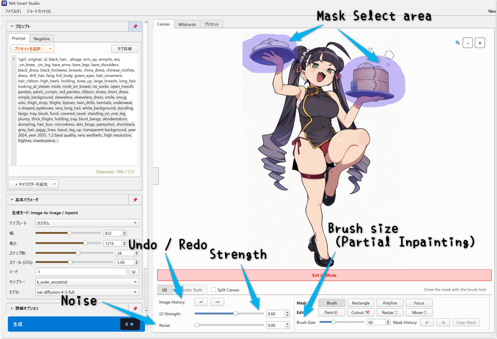
Masks and image editing
- Mask: Mark the area to change with Brush, Rectangle, or Polyline. You can also change the brush size with Ctrl + wheel.
- Focus: Temporarily enlarge a small area for Inpaint, then merge it back into the source image. The area inside the reference margin is changed. Choose the processing size from Standard 1MP / High 1.5MP / Max 2MP. Clear the selection with the frame’s × or a right-click.
- Paint: Draw directly on the image. Right-click to pick a color from it.
- Edit: Crop, resize the canvas, move, scale, rotate, or flip the image.
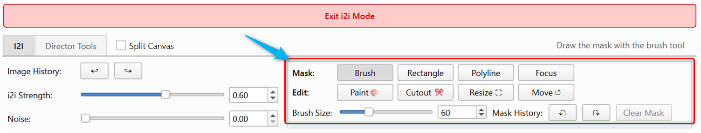
Turn on Split Canvas to show the source on the left and generated results on the right. Use it to generate repeatedly while retaining the source image and mask.
Director Tools
Remove clutter or backgrounds, create line art or sketches, colorize, or change expressions. Use image history to return to the image before a transformation.
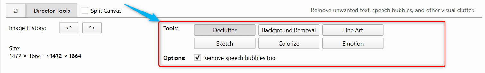
Simple Upscale
Increase the resolution of a Canvas image or refine its details. Choose a method that regenerates and refines the image, or one that simply enlarges it.
How to use it
- Load an image into Canvas and click Simple Upscale below it.
- Select a method and adjust the scale and strength or level.
- Check the output size and estimated Anlas cost, then run the upscale.
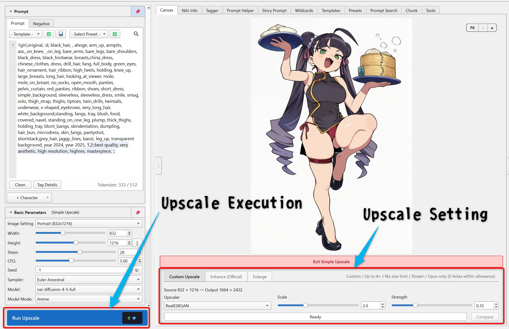
Choose a method
- Custom Upscale: Requires Opus. Enlarges with RealESRGAN / Waifu2x, then regenerates in tiles. Choose an upscaler, scale (up to 4×), and strength.
- Enhance (Official): Choose a scale supported by the model and source image and a level from 1–5. Max is V5-only. Even 1x regenerates the image; Advanced settings let you adjust strength and noise separately.
- Enlarge: Enlarges the image as-is without regenerating it. Choose NovelAI official (fixed at 2×), Standard resize, waifu2x, or RealESRGAN, with a scale of up to 4×. Only NovelAI official uses Anlas.
Manga Mode
Place characters on a page divided into panels and generate the whole page, drawing each panel separately. Available with V4 / V4.5 / V5 models.
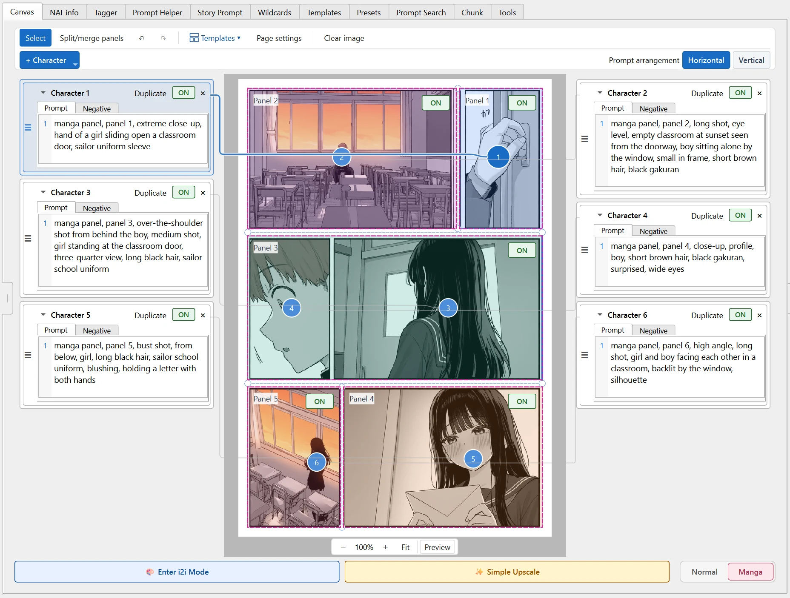
How to use it
- Click Manga in the Normal | Manga switch below Canvas. The first time, a blank page opens at the image size set in the basic parameters.
- Choose a layout from Templates ▾, or divide panels with Split/merge panels.
- Add characters with + Character, enter their Prompts, and drag each position marker on the page into the panel where that character should appear.
- Click Generate.
When there are no characters, Open sample loads an example page. Click Normal to return to the usual Canvas; clicking Manga again resumes where you left off.
Editing the layout
- Split/merge panels: Drag across a panel to divide it. Hold Shift to lock the line horizontal or vertical. Click a line between panels to merge them; click an orange dotted seam to unmerge.
- Select: Drag borders and gutter lines to adjust panel size and angle. Select a panel and press Delete to remove it.
- Templates ▾: Apply a built-in layout. Use Register layout to save the current layout for later.
- Page settings: Change margins, panel gaps, and border width.
Generating
Character Prompts are shared with the characters in Normal mode. Turn a panel OFF with the ON / OFF button at its top-right to keep it as-is. Clear image removes only the image and keeps the layout and Prompts.
Saving and editing again
Saved pages include editing data such as the layout and Prompts. When you import one, Metadata detected (Manga) appears; Import as manga restores the page so you can keep editing.
Continuous Generation
Repeat generation with the same settings or work through candidates in the generation queue.
- Open Continuous Generation in the left panel and choose a count, a duration, or a run that continues until stopped.
- Set the delay between generations and what to do when an error occurs.
- Start continuous generation. You can also use Ctrl + Shift + Enter.
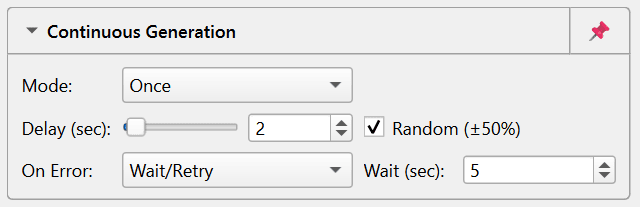
If the generation queue contains items, those take priority over the current on-screen input.
Vibe Transfer
Use reference images to guide the mood or style of a generation. You can combine multiple images in separate slots. Vibe Transfer is unavailable with V5.
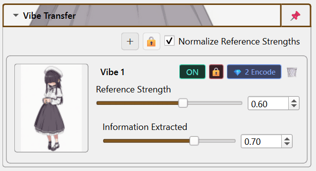
How to use it
- Open Vibe Transfer in the left panel and use + to add images or vibe files.
- Adjust reference strength and information extraction, then enable the slots you want to use.
- Generate. Slots that have not been encoded are processed first.
Save and reuse
Save and load .naiv4vibe / .naiv4vibeBundle files, or export an image with embedded Bundle data. Disable unused slots to keep them for later.
Precise Reference
Use reference images to guide character design or style. Precise Reference works with V4.5 and later models.
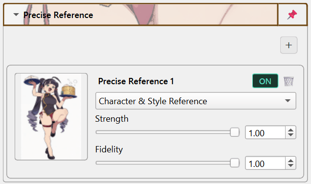
How to use it
- Open Precise Reference in the left panel and use + to add a reference image.
- Choose whether to reference the Character, Style, or Both.
- Adjust strength and fidelity, then generate.
You can register multiple images and enable or disable individual slots. Background preview visibility can be changed in settings.
NAI-info
Inspect the generation information embedded in an image. Review its Prompt, Negative, characters, Seed, and other settings, then reuse them for another generation.
- Drop an image into NAI-info or send it from the import dialog.
- Review the summary, prompts, generation settings, and raw metadata.
- Use Send to text2img or Send to img2img to reuse the information.
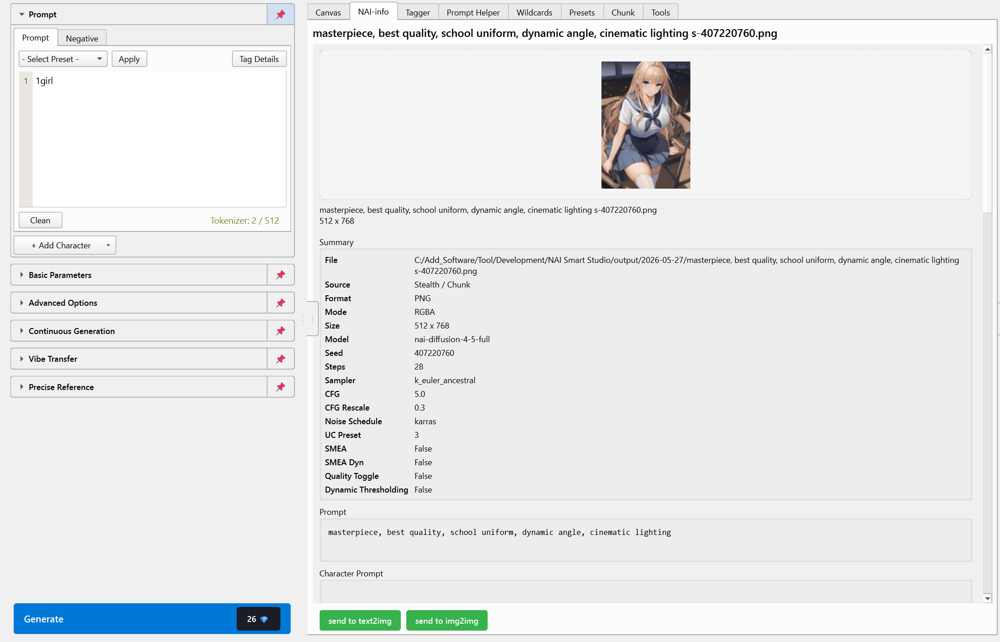
For images with Actual Prompt records, you can view and copy the resolved text. The option to load original expressions is shared with Importing Images.
Tagger
Infer tag candidates from images to help write a Prompt. Use Tagger to describe an image’s features or export tags for multiple images. Complete the initial setup through Tools or the setup settings first.
How to use it
- Load an image into Tagger, or send it from the import dialog.
- Select the model and General / Character / Copyright thresholds, then run tag inference.
- Review candidates and scores, select the tags you need, and click Add selected tags to prompt. Use Add tags to prompt to add the results together.
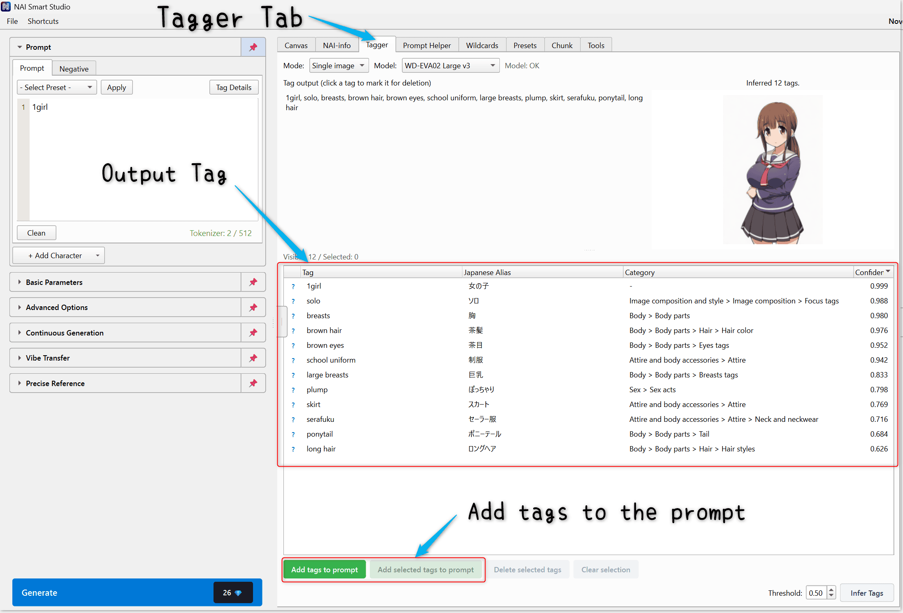
Inspect tags and process folders
- Tag information: View Japanese aliases and Prompt Helper categories. Use ? to open Danbooru Wiki.
- Folder batch processing: Infer tags for multiple images and export them as caption text files.
Prompt Helper
Find tags through search or categories and add them to Prompt / Negative. Use Prompt Helper when you cannot recall a tag name or want to explore related expressions.
Find and add tags
- Search by English tag, Japanese alias, or description, or browse categories such as body, clothing, and expressions.
- Review tag details and related tags.
- Show the destination Prompt / Negative tab, then double-click a tag or click Add to Prompt. Copy to Clipboard copies only the tag.
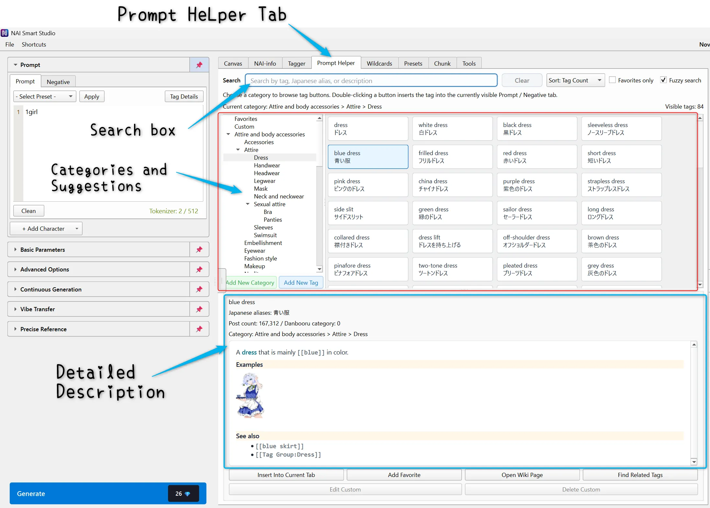
- Favorites: Save frequently used tags for easy access.
- Custom tags: Add your own tags and categories.
Story Prompt
Use NovelAI text generation to turn an outline into a story and image prompts for multiple scenes. Select a text generation model in the Story Prompt tab. Click Check Models to refresh the list of available models.
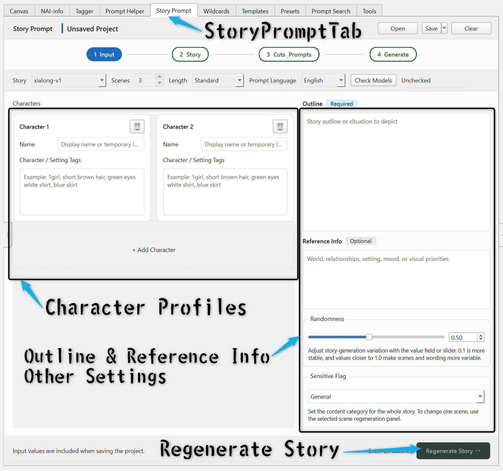
How to use it
- Input: Set the outline, characters, scene count, and rating, then generate the story.
- Story: Review and edit the text. You can also regenerate individual scenes.
- Cuts & Prompts: Use Break into Cuts to split the story into shots, then adjust each cut’s Prompt and image count.
- Generate: Use Review Plan to select cuts and click Add to Queue. Check the image model and size in the main panel, then click Generate to start processing.
You can also specify fixed character tags and a Prompt preset. Save and reopen your work as a project, or export Generation YAML, Data YAML, or Data JSON.
Set the story language and the image prompt language separately in Settings → Tools → Story Prompt.
Wildcards
Insert words or phrases from a set of candidates into Prompt. Use wildcards to generate variations in hair color, clothing, backgrounds, and more.
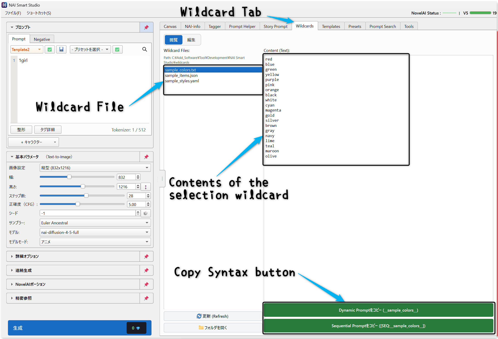
How to use them
- Prepare TXT / YAML / JSON files in the configured Wildcard folder. For TXT, write one candidate per line.
- Select a file or entry in the Wildcards tab, review its contents, and copy the expression.
- Paste it into Prompt and generate. Use Dynamic Prompt for random choices or Sequential Prompt to use candidates in order.
Syntax
{A|B|C}: Pick one of the inline candidates at random.__name__/__folder/name__: Pick from a file.__file/key__: Pick from a YAML / JSON key.[SEQ:__name__]: Use candidates in order during continuous generation.[SEQ*:__name__]: When a candidate contains several references, go through every combination in order.
Switch to Edit to modify and save file contents, or use an external text editor. Blank and # lines in TXT files are ignored. After expansion, CHAR: lines become character prompts.
Templates
Save prompts and generation settings together, then restore them in one step. Use templates to switch between familiar setups or return to previous settings after another task.
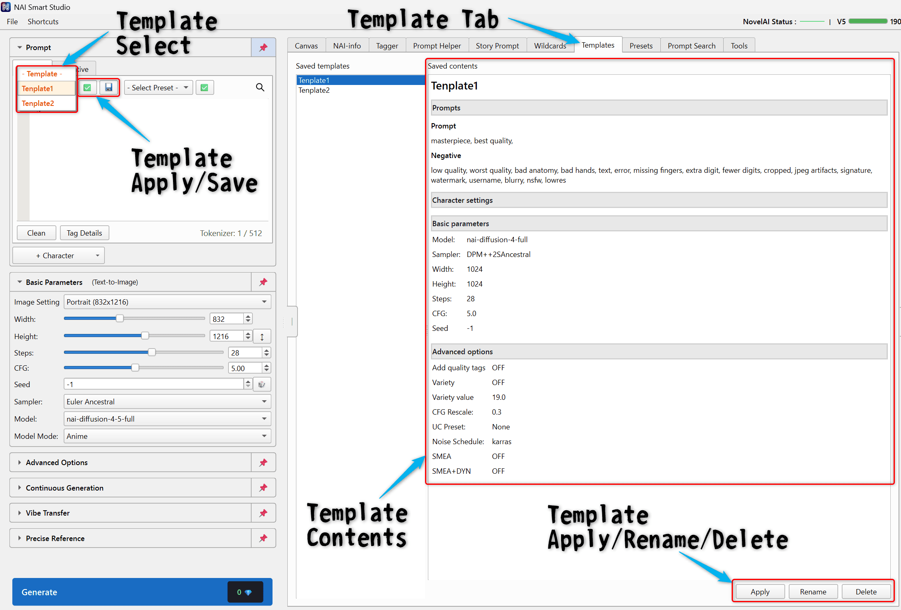
What is saved
- Prompts: Prompt / Negative, character-specific input, and character positions.
- Generation settings: Basic parameters such as image size, model, Steps, CFG, Seed, and Sampler, plus advanced options such as quality tags.
Save and load
- Prepare the Prompt and generation settings you want to save.
- Use the save icon above Prompt to create or overwrite a template.
- Select a template from the list above Prompt and apply it with the check button.
The Templates tab lets you inspect, apply, rename, and delete templates. Selecting an entry alone does not change the current input.
Presets
Save reusable tag additions, exclusions, and cleanup rules. Create presets for quality tags, styles, or other purposes and apply them to the current Prompt / Negative.
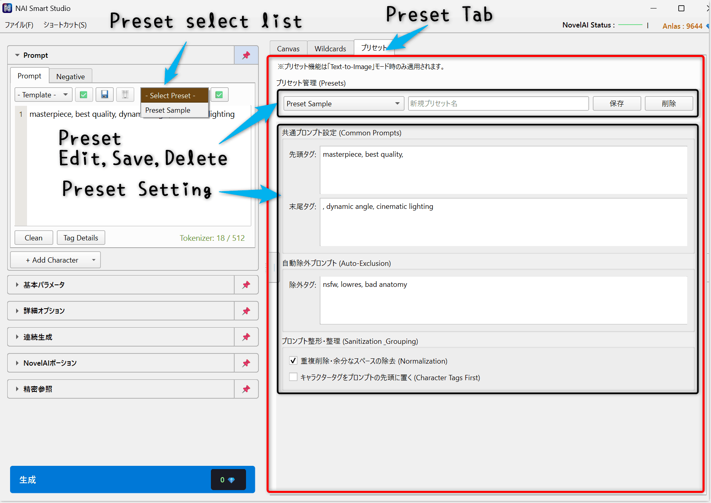
Available settings
- Prefix / Suffix: Add common tags at the start or end of Prompt.
- Common Negative: Add unwanted elements to Negative.
- Auto-Exclusion: Remove specified words.
- Cleanup: Remove duplicate tags and extra spaces.
Save and apply
Configure a preset in the Presets tab and save it with a name. Select it from the list above Prompt and apply it with the check button. Presets also apply during Text-to-Image generation; queued generation follows its Apply preset on generation setting.
Use Templates to save generation settings such as image size and model as well.
Prompt Search
Search prompts by tag conditions and add the results to the generation queue. Use it to try multiple prompt candidates in sequence.
Setup
For first use, run setup from the Tools tab or Settings → Tools. When setup finishes, enable Prompt Search to display its tab in the center panel. Tagger becomes available too.
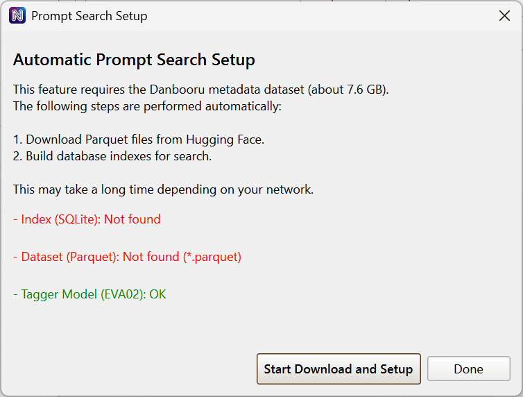
Search and generate
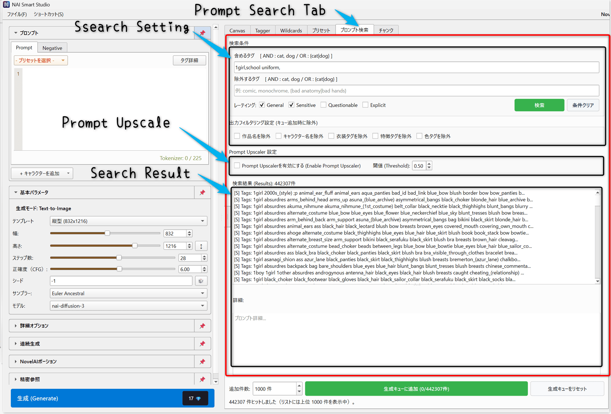
- Search using included tags, excluded tags, and ratings.
- Review the results, set the number to add, and click Add search results to generation queue.
- Check the image model, size, and other settings, then click Generate to process the queue in order.
Additional controls
- Output filtering: Exclude copyright, character, artist, clothing, feature, or color tags when adding results to the queue.
- Prompt Upscaler: Enrich prompts using tag inference during queue processing.
Prompt Chunks
Save reusable prompt fragments and insert them as components when needed. Organize quality tags, styles, and common phrases into categories.
Setup
Enable Prompt Chunks in Settings → Tools and open the setup wizard. Authenticate with email / password or Google login assistance to use the Chunk tab. Turn on Remember login on this PC (encrypted) to skip re-entering your details the next time you log in.
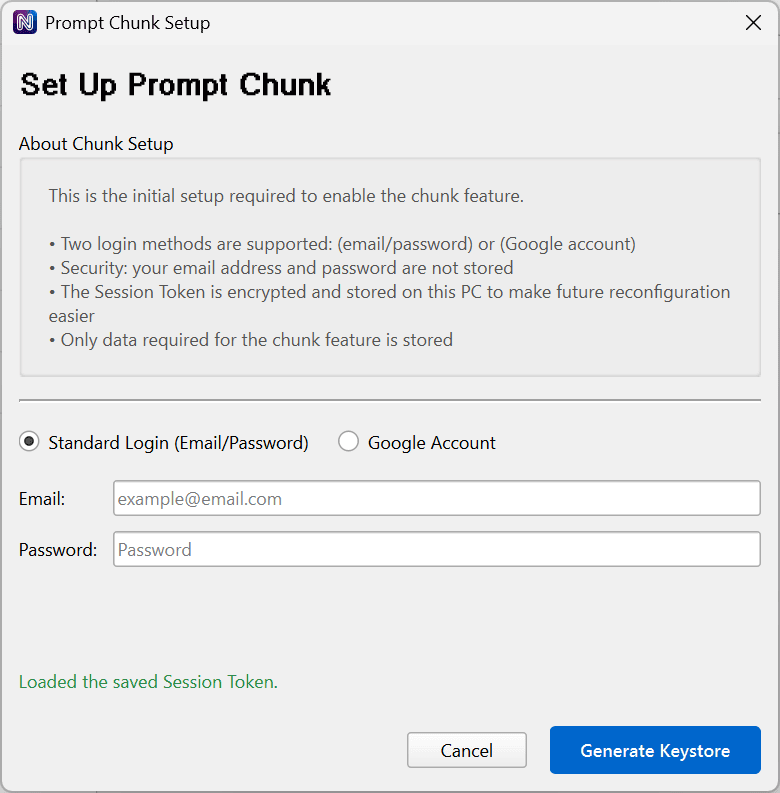
Create and insert chunks
- Create a category in the Chunk tab and add a chunk.
- Enter its name and prompt content, then save.
- Select the chunk and click Insert into Prompt, or double-click it to insert.
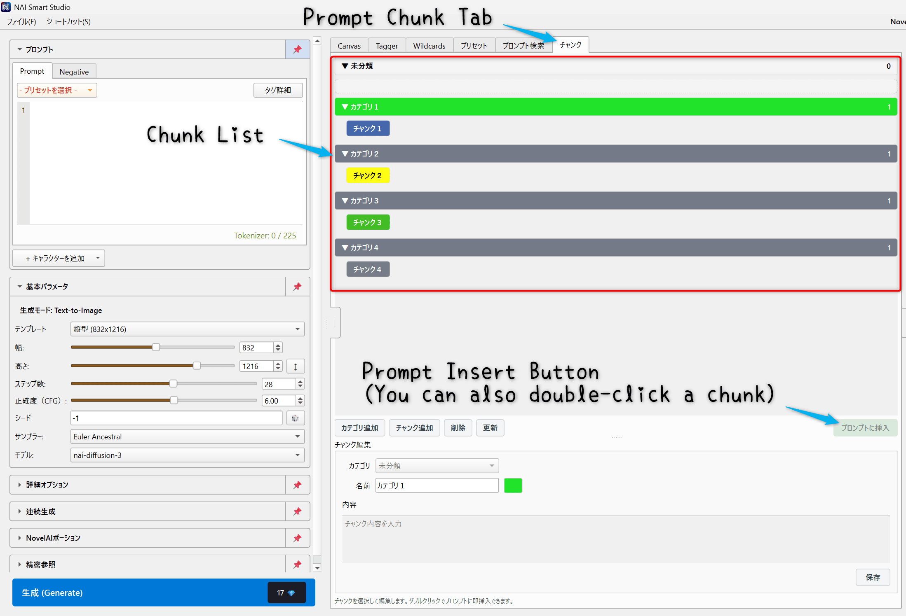
Use Refresh to retrieve the latest server-side content. While editing a Prompt, use Ctrl + P or @ to show chunk suggestions.
Tools
Set up helper features and enable or disable the tabs you want to use.
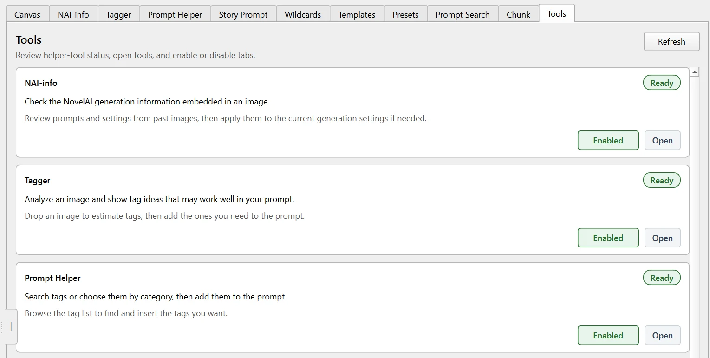
Hiding a tab keeps its settings, input, and installed data. Canvas and Tools always remain visible.
Settings & Other Features
Open File → Settings to configure output locations, prompt input, external integration, and other preferences.
Main settings
- General: Manage API keys, UI language, appearance (Auto / Light / Dark), output and favorites folders, the completion sound for continuous generation, emphasis adjustment with Ctrl + mouse wheel, the next billing date shown at the top right, and other general options.
- Image / History: Set the output format and file naming rules, plus the History thumbnail size and prompt popup.
- Prompt: Configure tag completion, Japanese aliases, highlighting, comma assistance, and related tags.
- Tools: Configure Prompt Helper and Story Prompt, and enable Search / Chunk or check their setup and authentication status.
- Others: Configure logs and storage-related options.
- About: Check the current version, check for updates, and open the official website or manual.
Click a related tag to add it to Prompt; right-click to add it to Negative or hide it temporarily. Ctrl + Space focuses the first suggestion. Change candidate counts and categories in Prompt. Turn on Also show for character prompts to show suggestions while editing a character Prompt as well (except in Manga mode).
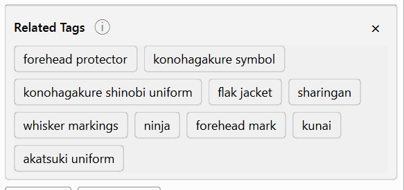
Eagle integration
If you manage images with Eagle, configure the destination and other options in Integration. Send generated images automatically or use an image’s right-click menu to send it manually, with prompts and generation information as tags and memos.
History and image actions
- Folder selection: Changes both the displayed images and the destination for subsequent generated images.
- Click / Shift+click: Display the image in Canvas / open the import dialog. You can also drag images to import them.
- Ctrl+Shift+click: Import without the dialog, using the items you last selected in the import dialog.
- Display: In Settings → Image / History, make thumbnails smaller to see more images at once. The prompt popup shown on hover can be limited to while Alt is held, or turned off.
- Heart: Copy the image to the favorites folder. Select a destination if one has not been set. If you also set Favorites (no meta) in Settings, a copy with metadata removed is saved as well.
- Select and delete: Ctrl+click selects multiple images. With History focused, Ctrl+A selects all and Delete moves the selected images to the Recycle Bin.
- Right-click: Save, save without metadata, copy, send to Eagle, open the containing folder, or import.
Settings gallery
General
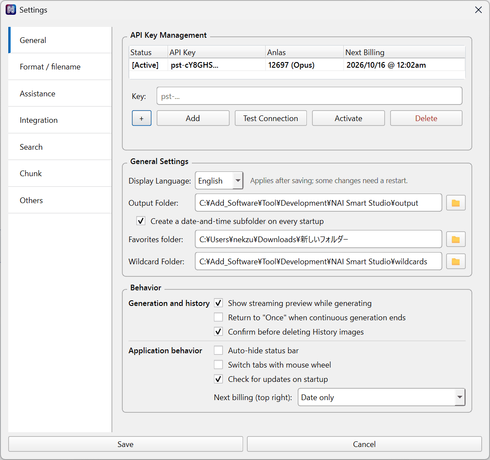
Image / History
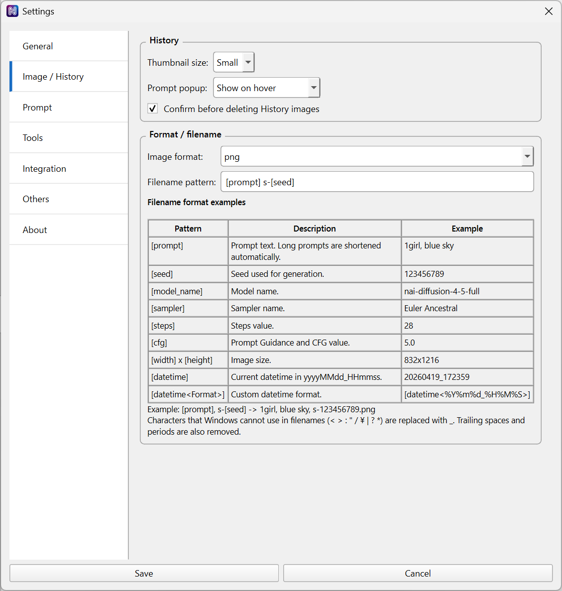
Prompt
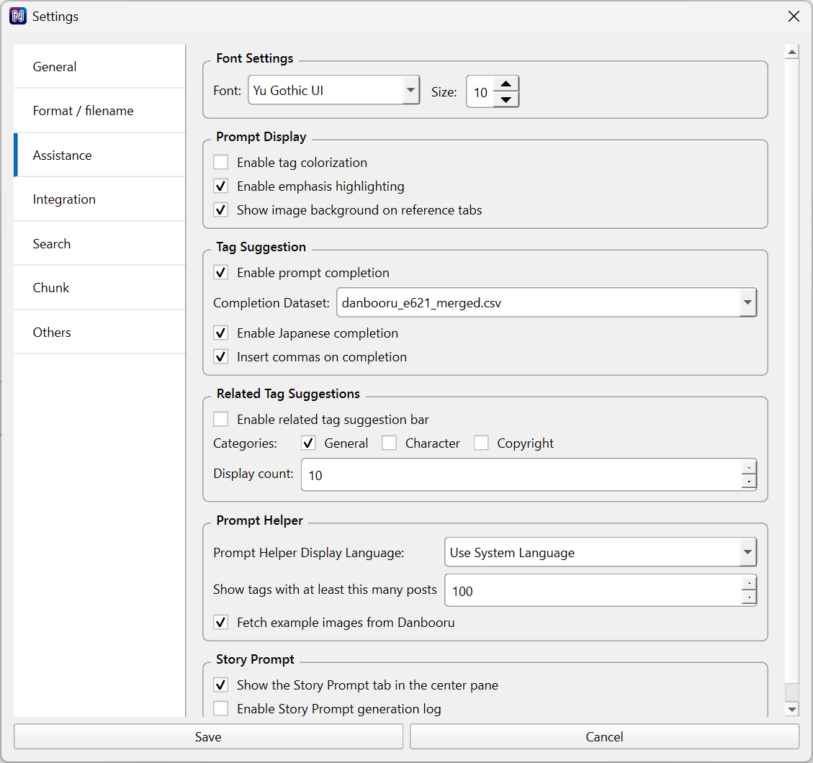
Tools
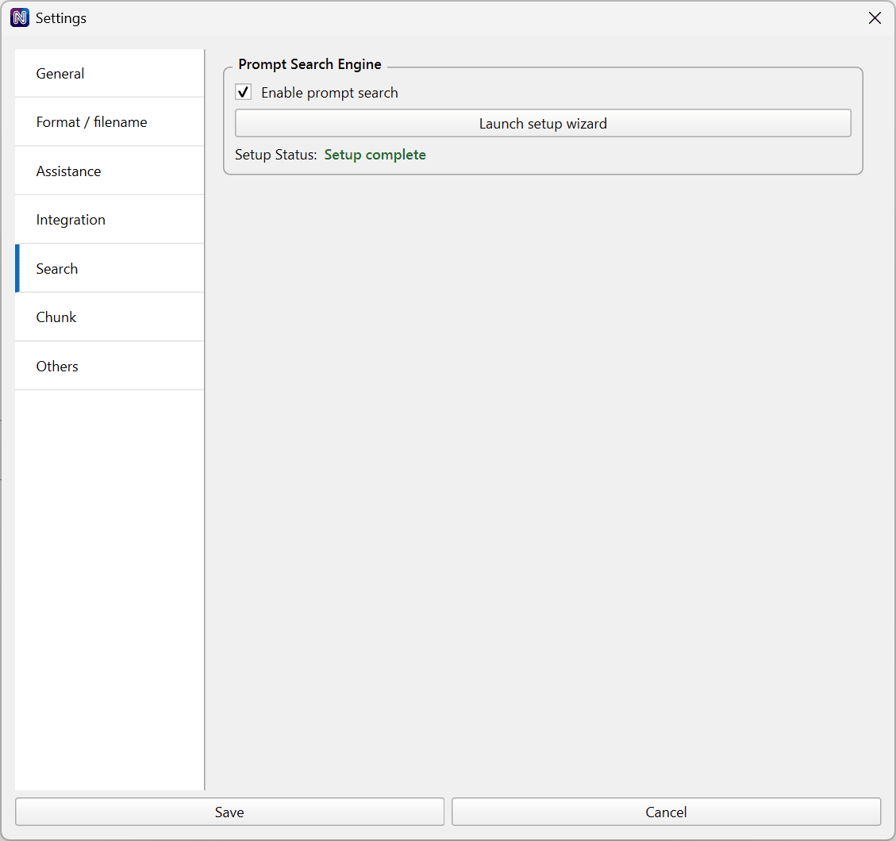
Integration
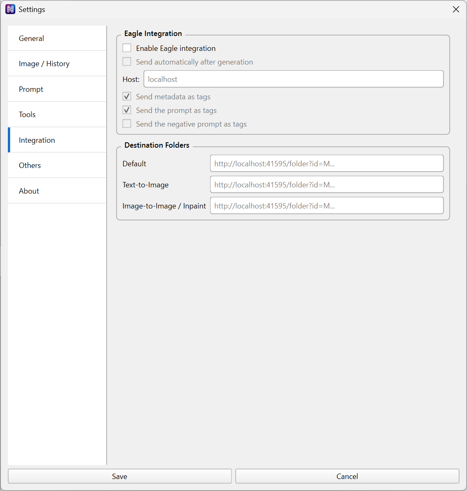
Others
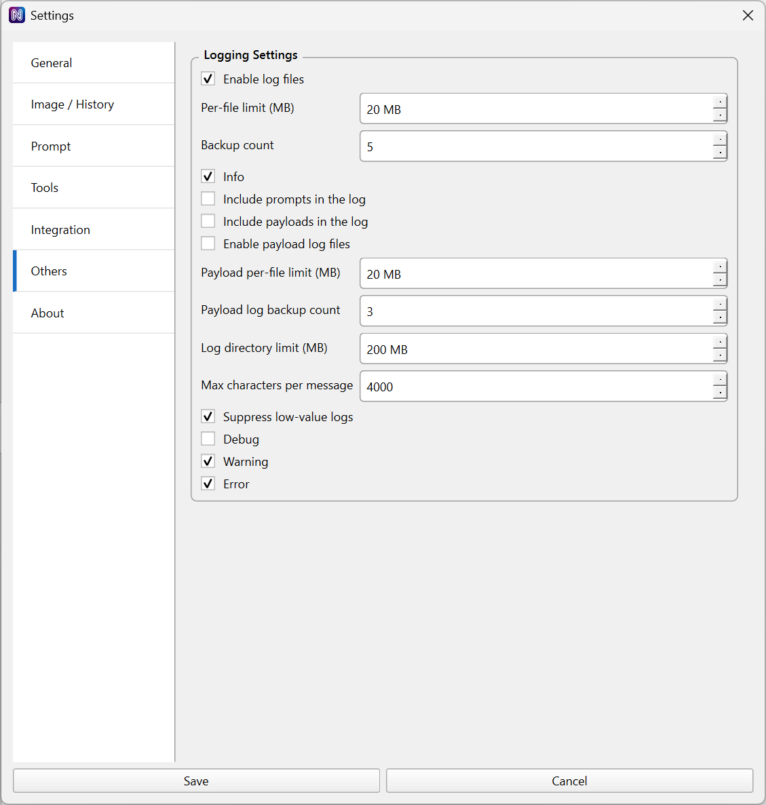
Shortcuts
Also available from the Shortcuts menu. Focus the relevant prompt, image, or History area before using its shortcuts.
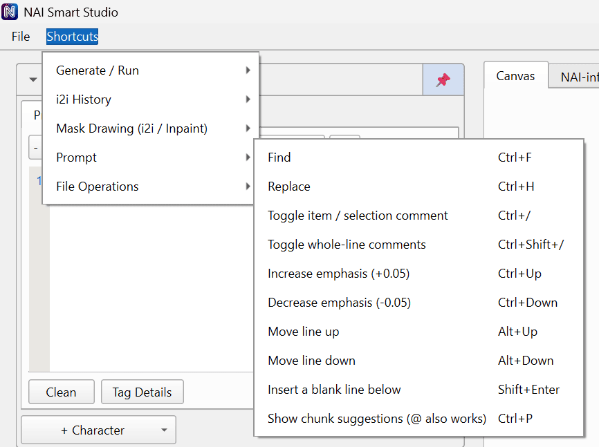
Generation
- Ctrl + Enter: Generate in the current mode
- Ctrl + Alt + Enter: Generate once
- Ctrl + Shift + Enter: Start continuous generation
Canvas / Mask
- ← / →: Image history Undo / Redo
- Ctrl + Z / Ctrl + Y: Mask Undo / Redo
Prompt editing
- Ctrl + F / Ctrl + H: Find / replace across prompts
- Ctrl + /: Toggle comments for the selection or item at the cursor
- Ctrl + Shift + / / line-number click: Toggle whole-line comments
- Ctrl + ↑ / ↓: Increase / decrease emphasis
- Alt + ↑ / ↓: Move current or selected lines
- Shift + Enter: Insert a blank line below
- Ctrl + P /
@: Show Chunk suggestions
Input helper popup
- Enter / Tab: Confirm
- Esc: Close
- ↑ / ↓ / PageUp / PageDown: Move between suggestions
- Ctrl + Space: Focus the first related tag suggestion
Manga mode
- Ctrl + Z / Ctrl + Y: Undo / Redo edits
- Delete: Delete the selected panel
History
- Ctrl + click: Add to or remove from the selection
- Ctrl + A: Select all images in the current folder
- Delete: Move selected images to the Recycle Bin
- Shift + click: Import image information
- Ctrl + Shift + click: Import without the dialog
Image file actions
- Ctrl + O: Open image
- Ctrl + S: Save (choose a location the first time)
- Ctrl + Shift + S: Save As
- Ctrl + Alt + S: Save Without Metadata
- Ctrl + C: Copy image
- Ctrl + E: Send to Eagle
- Ctrl + Shift + E: Open containing folder